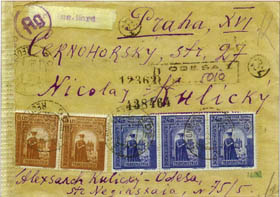
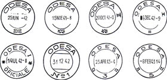
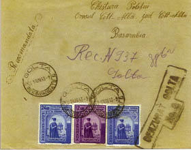

www.scherrer-rumaenien.de
Horst Scherrer, Deutschland "Die Lager- und
Unterdrückungssysteme in Rumänien von 1941 - 1944"
(Lagărele şi sistemele de oprimare în România între 1941 - 1944)


Scrisoare recomandată a unei familii ucrainiene din Odesa, adresată unei rude din Praga
Un extras dintr-un număr mare de ştampile poştale civile şi ştampile de cenzură din Odesa


O muncitoare supusă la muncă forţată într-o turnătorie din Moghilev îi scrie familiei ei din Bucureşti
Investigaţie a "Poliţiei orăşeneşti pentru probleme speciale" (probleme evreieşti) adresată poliţiei orăşeneşti din Cetatea Albă (Basarabia)